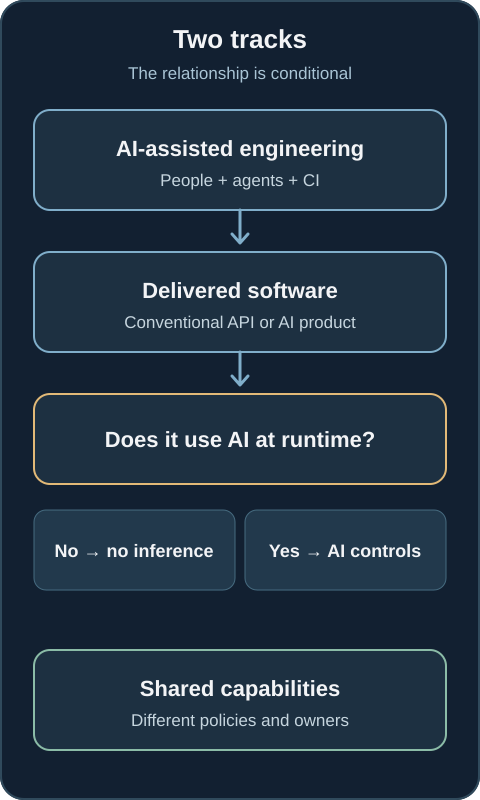
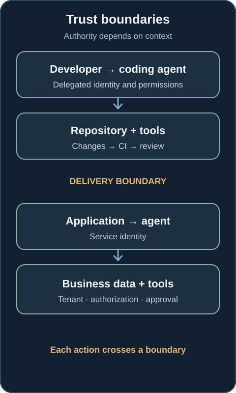
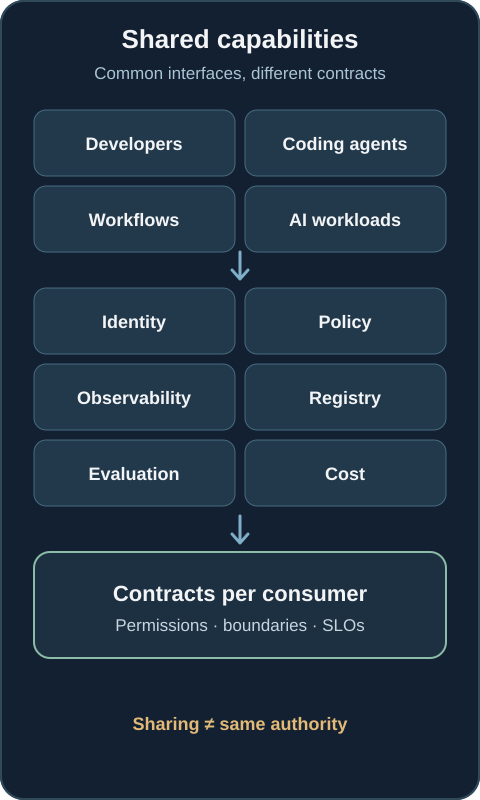
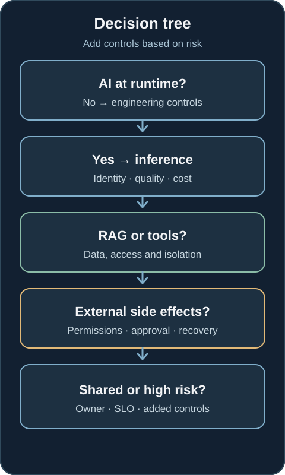

What's the difference between using AI to build software and running AI in production?
Two operating models can use the same platform capabilities. Their trust boundaries, policies and operational owners still need explicit contracts.
A platform team receives two requests in the same week. Team A uses Claude Code or Codex to change a conventional backend API. Team B is building a customer-facing assistant that calls a model and can use business tools. Both teams say they are “using AI”. Should both products depend on the same production AI platform?
Team A's API does not need model inference in production merely because an agent helped write it. The coding agent still needs controls for repository access, external services, credentials and review. Team B needs those engineering controls too. Its application also needs controls for AI behavior while customers use it.
Using AI to build software does not imply an AI runtime in that software. But the two operating models can share platform capabilities. This article uses AI Runtime to mean the capabilities needed to run and govern AI behavior in an application. It does not imply a mandatory standalone platform. The examples are illustrative designs, not descriptions of a deployed system.

Track 1: AI-assisted engineering
I use AI Engineering Operating System to mean an operating model: the lifecycle, contracts, tools, controls and owners that let people and agents participate in software delivery. It is not a commercial product. An AI-driven development lifecycle (AI-DLC) describes how AI can participate across stages of development. For example, AWS's AI-DLC description discusses development as a lifecycle; a team can adapt its own stages.
A lifecycle is not an execution tool. A methodology such as Spec-Driven Development can define how a team specifies, plans and verifies a change within one stage. A coding-agent harness is the execution environment around an agent: it supplies instructions, tool access and execution controls. Neither the method nor the harness replaces ownership of the lifecycle.
Context Engineering selects the instructions and knowledge relevant to a task. Repository instructions, versioned architecture decisions, shared skills and reusable procedures provide context; approved tools let the harness act. Treat external documents, tool responses and repository content as potentially untrusted inputs, not as authority to override policy. A coding agent may use a developer's delegated access or a separate workload identity. Scope that access, protect credentials and record which principal authorized consequential actions.
Continuous integration and delivery (CI/CD) should run deterministic checks for properties that code can verify. Tests, policy checks, change review and approval gates produce evidence; an agent's explanation is not a substitute for those checks. An owner must be able to reconstruct the change, its inputs and approvals at a level proportionate to risk. The earlier articles cover adoption and governance, coding-agent traceability and deterministic verification in more detail.
Track 2: production AI runtime
When a running application calls a model, the model's availability, output and cost become application concerns. The team needs a defined model access path and routing rules, runtime identity and authorization, timeouts, rate limits, cost attribution and an owner for incidents. It must decide what happens when the model fails, times out, returns an invalid format or produces a plausible but incorrect result. A fallback may be a safe deterministic path, a queue for human review, or an explicit failure; it must not silently imply that an unverified answer is correct.
Inputs and outputs may contain customer data. Enforce tenant and data access at the application and tool boundaries. Set retention, deletion and security rules for prompts, results and traces. Logs can themselves expose sensitive data: minimize or redact content and restrict access. Guardrails can filter selected content, but they do not replace authorization, input handling or testing against prompt injection.
Evaluation measures task quality against representative cases, including adversarial inputs and relevant failure modes. Monitor quality after release as well as latency, availability, errors and cost. Traces should connect a request to model version, prompt or configuration version, retrieval and tool calls, policy decisions and outcome, subject to data rules. Define a service level objective (SLO), an explicit target for service behavior, and an incident response path appropriate to the feature.
Controls depend on risk. A bounded classification call may need schema validation, a quality test set and a fallback, with no agent framework. A long-running agent with write access needs stronger controls. Not every AI application is an autonomous agent.
Compare the operating models
The table describes typical boundaries, not absolute rules. A centrally operated coding agent can itself be a production service; its own operators need runtime controls even if the software it changes has no AI dependency.
- Consumers: Developers, coding agents, delivery workflows / Application users, services and runtime agents.
- Objective: Deliver a correct, reviewable change / Deliver a safe, useful application outcome.
- Execution boundary: Workstation or managed agent environment and delivery pipeline / Application, model access, retrieval and tool execution.
- Trust boundary: Developer, repository, external context, CI and deployment / User, tenant, service, model, retrieved content and business tools.
- Identity: Human identity and scoped delegated or agent identity / Workload identity; user delegation when needed.
- Tools: Repository, test, build and approved engineering tools / Model, retrieval and business APIs; restricted actions.
- Context and data: Source code, instructions, specifications and secrets / User input, tenant data, retrieved records and state.
- Validation: Tests, static checks, policy and change review / Schemas, authorization, policy checks and safe fallback.
- Evaluation: Change quality, task success and agent behavior / Task quality, safety and outcome across representative cases.
- Observability: Change history, tool calls, CI evidence and approvals / Request traces, model and tool calls, quality, latency and errors.
- Human control: Review and approve changes or privileged tool use / Review outputs or approve actions according to risk.
- Failure impact: Bad change, exposed code or credentials, delivery disruption / Incorrect customer result, data exposure or business side effect.
- Cost: Developer time, agent usage and CI / Inference, retrieval, execution, operations and incident cost.
- Ownership: Engineering team; platform and security own shared controls / Product/service owner with platform, security and operations.
- Lifecycle: Task, change, review, release and feedback / Request or event, execution, monitoring, incident and recovery.
Both need identity, authorization, evidence and evaluation. The allowed principal, data scope, retention, response time and approval threshold can differ. A shared log pipeline, for example, must not expose customer prompts to every developer who can see build logs.

Shared platform capabilities, separate contracts
A platform can offer common identity and access control, policy-as-code (versioned executable policy), observability, secrets and credential management, and cost attribution. It can also offer model gateways where useful, registries of approved tools and capabilities, versioned skills and configuration, and evaluation infrastructure. A registry records what is available; it must not grant access by itself. A gateway can centralize routing and measurement, but it can also become a shared failure and latency dependency. Define its failure mode and owner before making it mandatory.
Reuse the interface and control machinery, then set policy per consumer. A coding agent may read a repository but have no customer-data access. A runtime agent may read a tenant's records through a filtered API but have no repository access. Evaluation can share datasets and execution infrastructure only when data access permits it; a code test suite and a customer-answer quality set measure different outcomes. Separate budgets, retention, incident escalation and SLOs even if telemetry uses one backend.
Location alone is a poor boundary. A local coding agent can call remote models and services. A centrally managed developer agent may run shared jobs, maintain credentials and affect many teams. A company-operated runtime agent may act for a customer or process events without an interactive user. Ask who operates each component, which dependencies are shared, whose identity is used, what it can do, and who absorbs a failure. A developer agent operated as a shared service deserves its own production reliability and security controls.

Three architecture examples
1. A conventional API built with AI
A developer uses a coding agent to propose a change to an inventory API. The harness reads the allowed repository and runs approved tests. CI verifies the change and a reviewer approves it. The deployed API serves requests through its normal backend and database; it makes no model call.
Trust boundary: the agent crosses from developer authority into repository and tool access; CI and deployment have separate permissions. Protect code, credentials and external model inputs. Owner: the engineering team owns the change and service; the platform team owns any shared agent service and CI capability. No production inference infrastructure is implied for the API.
2. A production AI feature
A support backend sends a customer request to a model for classification or summarization. The backend authenticates the caller, scopes the request to the tenant, minimizes data sent, calls an approved model and validates the output schema. It applies a timeout and a rate and cost budget. If the response fails validation, it routes the request to a human queue instead of inventing a category. A representative evaluation set checks classification errors and summary omissions; monitoring tracks quality, latency and failures.
Trust boundary: customer input crosses into model processing, then the model output returns as untrusted application input. The application enforces tenant access and retention. Owner: the product service team owns behavior, quality and incidents; platform can own the model access service. This design needs no multi-agent system.
3. A tool-using production agent
An agent reads approved account data and proposes a refund. A tool gateway validates the service identity, tenant, action and amount against policy. A human approves actions above a risk threshold; the approval binds to the exact action and its parameters, expires, and is checked again before execution. The business API independently authorizes the action. A trace connects the request, retrieved data references, tool calls, approval and result without logging unnecessary sensitive content.
A retry after a timeout can duplicate a refund. Use an idempotency key bound to the business operation and check the authoritative system for the result before retrying. Persist state at appropriate checkpoints; distinguish a failed action from an unknown outcome. Define reconciliation, compensation where possible, escalation and a way to stop the agent. Isolate tenant data and execution state, limit tool scope and duration, and test prompt injection in retrieved content.
Trust boundary: the agent crosses from model-generated intent into business data and side effects. A model response is a proposal, not authorization. Owner: the product/service team owns business outcomes and recovery; tool owners enforce their APIs; platform, security and operations own their respective shared controls and incident paths.
Decision framework

- Only development uses AI? Protect the agent, context, tools and delivery pipeline. The resulting application does not need inference solely for that reason. If the agent is centrally operated, treat that agent service as its own production workload.
- Does the application call a model? Define identity, model access, data handling, validation, quality evaluation, failure behavior, observability and cost ownership. Start with the smallest controls that meet the risk.
- Does it use retrieval-augmented generation (RAG)? RAG adds retrieved material to the model's input. Enforce source and tenant permissions before retrieval, track source versions and freshness, and evaluate both retrieval and answer quality. Treat retrieved text as untrusted.
- Can tools cause external side effects? Add independent authorization, narrow permissions, idempotency, approval where warranted, and recovery for partial or uncertain outcomes. Read-only access can still expose sensitive data.
- Is execution shared, scheduled or event-triggered? Name the operator and workload identity. Bound concurrency, retries, budgets and isolation. Provide traceability and an on-call path even when no person starts the run.
- Is the operation high-risk or regulated? Map applicable obligations to evidence, retention, approval, independent review and incident procedures. Involve the relevant risk and legal owners; do not assume a managed service establishes compliance.
These branches accumulate. The appropriate architecture depends on consequences, reversibility, data sensitivity and the ability to detect and recover from failure, not on the word “agent”.
AWS as one implementation option
For the second example, Amazon Bedrock provides model access; an application could use AWS Lambda to execute its request handler and AWS IAM roles with temporary credentials for workload access. Amazon CloudWatch can collect operational telemetry. The team still defines tenant authorization, data handling, quality tests, alerts and fallback behavior.
Amazon Bedrock Guardrails can evaluate configured content policies for supported use cases. Its prompt-attack documentation describes integration requirements and states that the prompt-attack filter does not evaluate tool results. Test the actual integration and enforce tool authorization independently.
For a suitable agent workload, Amazon Bedrock AgentCore Runtime provides managed execution and isolation capabilities. Its security guidance still assigns the application responsibility for binding users to sessions and applying least privilege. Check the documentation for the selected runtime mode and its isolation limits. AWS Step Functions can coordinate workflows with retry and error handling. Neither a retry policy nor managed orchestration makes an external business action idempotent. The team owns action authorization, deduplication, recovery and incident response.
These are options, not required components. Choose them against the workload's contracts and verify current service support, region and configuration before implementation.
Platform Engineering: make the contracts consumable
The platform now serves human developers, coding agents, automated engineering workflows and production AI workloads. Each needs a usable interface to request identity, tools, model access, policy decisions, telemetry or evaluation. A useful contract states the consumer, permissions, data scope, owner, reliability target, cost attribution, failure behavior and escalation path. It should make the secure path easy to consume and make exceptions visible.
The goal is not more infrastructure. It is clear interfaces, security boundaries and operating responsibilities. The platform team provides capabilities; application and engineering teams remain accountable for their use and outcomes. Security sets and reviews controls with those owners; operations and SRE help define reliability and response. A shared capability is valuable only if each consumer can understand its guarantees and limits.
Conclusion
AI-assisted software engineering and production AI behavior are different engineering problems. They can reuse identity, policy, observability and other capabilities, but each needs its own authority, runtime boundaries and operational owner.
When an agent requests its next capability, who grants the authority, which boundary does the action cross, and who can detect and recover from its failure?